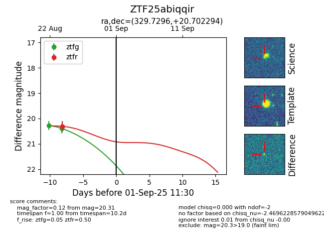

Target ZTF25abiqqir at 2025-08-26 10:22, see:
FINK: fink-portal.org/ZTF25abiqqir
Lasair: lasair-ztf.lsst.ac.uk/objects/ZTF25abiqqir
ALeRCE: alerce.online/object/ZTF25abiqqir
alt names
ZTF25abiqqir (ztf,fink)
coordinates:
equatorial (ra, dec) = (329.7296,+20.70229)
galactic (l, b) = (77.3163,-26.51187)
photometry
last ztfg=20.39, ztfr=20.31
2 ztfg, 1 ztfr detections
